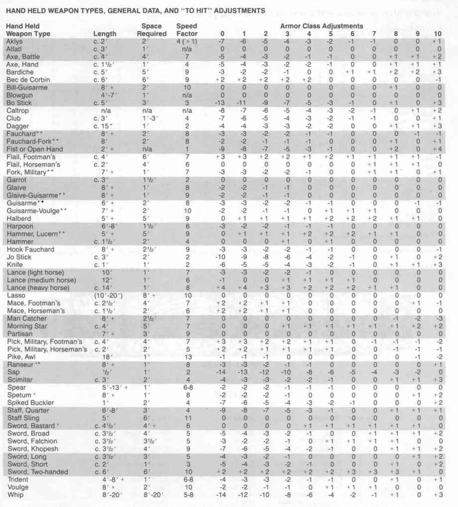
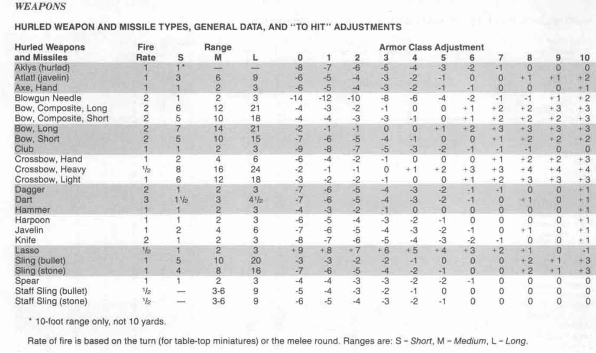

装备角色 · Equipping the Character
本章补充《玩家手册》的装备资料。新护甲与武器的基本购置价格见下表；护甲等级见“护甲”主题，各职业的武器熟练项、新武器重量及伤害、近战与远程武器的护甲等级命中调整见后续“武器”主题。金额沿用原书的金币 `gp`、银币 `sp`、琥珀金币 `ep` 单位。
基本装备与补给价格 · Basic Equipment and Supplies Costs
护甲 · Armor
| 装备 | 价格 |
|---|---|
| 青铜板甲 Bronze Plate | 100 gp |
| 野战板甲 Field Plate | 2,000 gp |
| 全身板甲 Full Plate | 4,000 gp |
| 圆盾 Buckler | 5 gp |
武器 · Arms
| 装备 | 价格 | 装备 | 价格 |
|---|---|---|---|
| 投索棍 Aklys | 2 gp | 带鞘小刀 Knife & scabbard | 1 gp |
| 投枪器 Atlatl | 1 gp | 套索 Lasso | 5 sp |
| 吹箭筒 Blowgun | 20 gp | 捕人叉 Man Catcher | 25 gp |
| 吹箭针 Blowgun Needle | 1 sp | 皮棍 Sap | 1 gp |
| 蒺藜 Caltrop | 2 sp | 带刺圆盾 Spiked Buckler | 10 gp |
| 手弩 Crossbow, hand | 300 gp | 长柄投石索 Staff Sling | 2 gp |
| 手弩矢 Quarrels for same | 100 gp | 带鞘弯刃大刀 Sword, falchion, and scabbard | 10 gp |
| 绞索 Garrot | 1 ep | 镰形剑 Sword, khopesh | 10 gp |
| 鱼叉 Harpoon | 5 gp | 鞭 Whip | 3 gp |
| 钩刃长柄刀 Hook Fauchard | 6 gp |
护甲 · Armor
护甲等级表 Armor Class Table
此表按原书列出各种护甲和盾牌组合的护甲等级（AC）。数字越低，防护越强。
| 护甲配置 | AC |
|---|---|
| 无护甲 | 10 |
| 仅盾牌 | 9 |
| 皮甲或棉甲 | 8 |
| 皮甲＋盾牌、棉甲＋盾牌、镶钉皮甲或环甲 | 7 |
| 镶钉皮甲＋盾牌、环甲＋盾牌，或鳞甲 | 6 |
| 鳞甲＋盾牌、锁子甲，或精灵锁子甲 | 5 |
| 锁子甲＋盾牌、精灵锁子甲＋盾牌、板条甲、带甲，或青铜板甲 | 4 |
| 板条甲＋盾牌、带甲＋盾牌、青铜板甲＋盾牌，或普通板甲 Plate Mail | 3 |
| 普通板甲＋盾牌，或野战板甲 Field Plate | 2 |
| 野战板甲＋盾牌，或全身板甲 Full Plate | 1 |
| 全身板甲＋盾牌 | 0 |
武器 · Weapons
以下各表沿用的顺序，补充新武器及相关职业的熟练规则。重量用金币重量表示；`1–6` 等记号表示伤害范围，并非骰子表达式。
武器熟练表 Weapon Proficiency Table
| 职业 | 初始熟练武器数 | 不熟练命中惩罚 | 获得新熟练项的等级间隔 |
|---|---|---|---|
| 骑士 Cavalier | 3* | −3 | 每 2 级 1 项 |
| 圣武士 Paladin | 3* | −3 | 每 2 级 1 项 |
| 牧师 Cleric | 2 | −3 | 每 4 级 1 项 |
| 德鲁伊 Druid | 2 | −4 | 每 5 级 1 项 |
| 战士 Fighter | 4 | −2 | 每 3 级 1 项 |
| 野蛮人 Barbarian | 6 | −1 | 每 2 级 1 项 |
| 巡林客 Ranger | 3* | −2 | 每 3 级 1 项 |
| 魔法师 Magic-User | 1 | −5 | 每 6 级 1 项 |
| 幻术师 Illusionist | 1 | −5 | 每 6 级 1 项 |
| 盗贼 Thief | 2 | −3 | 每 4 级 1 项 |
| 杂技盗贼 Acrobat | 2 | −3 | 每 4 级 1 项 |
| 刺客 Assassin | 3 | −2 | 每 4 级 1 项 |
| 武僧 Monk | 1 | −3 | 每 2 级 1 项 |
| 吟游诗人 Bard | 5 | −2 | 每 4 级 1 项 |
原书注：0 级骑手有 1 种熟练武器；0 级枪骑侍从有 2 种；1 级持械侍从有 3 种。骑士和巡林客可选择的熟练武器另受其职业描述限制。
按武器种类列出的重量与伤害 · Weight and Damage by Weapon Type
| 武器 | 约重（金币重量） | 对小型／中型 | 对大型 |
|---|---|---|---|
| 投索棍 Aklys | 35 | 1–6 | 1–3 |
| 投枪器与标枪 Atlatl and javelin | 30 | 1–6 | 1–6 |
| 箭 Arrow | 2 | 1–6 | 1–6 |
| 战斧 Axe, Battle | 75 | 1–8 | 1–8 |
| 手斧／投斧 Axe, Hand or Throwing | 50 | 1–6 | 1–4 |
| 阔刃长柄斧 Bardiche | 125 | 2–8 | 3–12 |
| 鸦嘴锤 Bec de Corbin | 100 | 1–8 | 1–6 |
| 钩刃长柄武器 Bill-Guisarme | 150 | 2–8 | 1–10 |
| 吹箭筒与针 Blowgun and needle | 15 | 1 | 1 |
| 短棍 Bo Stick | 15 | 1–6 | 1–3 |
| 蒺藜 Caltrop | 2–4 | 1 | 1–2 |
| 木棒 Club | 30 | 1–6 | 1–3 |
| 匕首 Dagger | 10 | 1–4 | 1–3 |
| 飞镖 Dart | 5 | 1–3 | 1–2 |
| 长柄弯刀 Fauchard | 60 | 1–6 | 1–8 |
| 叉刃长柄刀 Fauchard-Fork | 80 | 1–8 | 1–10 |
| 步兵连枷 Flail, Footman's | 150 | 2–7 | 2–8 |
| 骑兵连枷 Flail, Horseman's | 35 | 2–5 | 2–5 |
| 军用叉 Fork, Military | 75 | 1–8 | 2–8 |
| 绞索 Garrot | 1 | 1–4 | 1–6 |
| 长刃枪 Glaive | 75 | 1–6 | 1–10 |
| 长刃钩枪 Glaive-Guisarme | 100 | 2–8 | 2–12 |
| 钩枪 Guisarme | 80 | 2–8 | 1–8 |
| 钩刃枪 Guisarme-Voulge | 150 | 2–8 | 2–8 |
| 戟 Halberd | 175 | 1–10 | 2–12 |
| 鱼叉 Harpoon | 50–60 | 2–8 | 2–12 |
| 卢塞恩锤 Hammer, Lucern | 150 | 2–8 | 1–6 |
| 锤 Hammer | 50 | 2–5 | 1–4 |
| 钩刃长柄刀 Hook Fauchard | 80 | 1–4 | 1–4 |
| 标枪 Javelin | 20 | 1–6 | 1–6 |
| 约棍 Jo Stick | 40 | 1–6 | 1–4 |
| 小刀 Knife | 6 | 1–3 | 1–2 |
| 轻骑枪 Lance (light horse) | 50 | 1–6 | 1–8 |
| 中骑枪 Lance (medium horse) | 100 | 2–7 | 2–12 |
| 重骑枪 Lance (heavy horse) | 150 | 3–9 | 3–18 |
| 套索 Lasso | 20 | — | — |
| 步兵钉头锤 Mace, Footman's | 100 | 2–7 | 1–6 |
| 骑兵钉头锤 Mace, Horseman's | 50 | 1–6 | 1–4 |
| 捕人叉 Man Catcher | 80 | 1–2 | 1–2 |
| 晨星 Morning Star | 125 | 2–8 | 2–7 |
| 宽刃长枪 Partisan | 80 | 1–6 | 2–7 |
| 步兵军用镐 Pick, Military, Footman's | 60 | 2–7 | 2–8 |
| 骑兵军用镐 Pick, Military, Horseman's | 40 | 2–5 | 1–4 |
| 锥枪 Pike, Awl | 80 | 1–6 | 1–12 |
| 手弩矢 Quarrel (or Bolt), hand | 1 | 1–3 | 1–2 |
| 轻弩矢 Quarrel (or Bolt), light | 1 | 1–4 | 1–4 |
| 重弩矢 Quarrel (or Bolt), heavy | 2 | 2–5 | 2–7 |
| 侧刃叉枪 Ranseur | 50 | 2–8 | 2–8 |
| 皮棍 Sap | 10 | 1–2 | 1–2 |
| 弯刀 Scimitar | 40 | 1–8 | 1–8 |
| 投石索铅弹 Sling Bullet | 2 | 2–5 | 2–7 |
| 投石索石弹 Sling Stone | 1 | 1–4 | 1–4 |
| 矛 Spear | 40–60 | 1–6 | 1–8 |
| 双叉长枪 Spetum | 50 | 2–7 | 2–12 |
| 带刺圆盾 Spiked Buckler | 35 | 1–4 | 1–3 |
| 长棍 Staff, Quarter | 50 | 1–6 | 1–6 |
| 长柄投石索铅弹 Staff Sling Bullet | 5 | 2–8 | 3–9 |
| 长柄投石索石弹 Staff Sling Stone | 4 | 1–8 | 2–8 |
| 混种剑 Sword, Bastard | 100 | 2–8 | 2–16 |
| 阔剑 Sword, Broad | 75 | 2–8 | 2–7 |
| 弯刃大刀 Sword, Falchion | 60–80 | 2–7 | 2–8 |
| 镰形剑 Sword, Khopesh | 75 | 2–8 | 1–6 |
| 长剑 Sword, Long | 60 | 1–8 | 1–12 |
| 短剑 Sword, Short | 35 | 1–6 | 1–8 |
| 双手剑 Sword, Two-handed | 250 | 1–10 | 3–18 |
| 三叉戟 Trident | 50 | 2–7 | 3–12 |
| 宽刃长柄枪 Voulge | 125 | 2–8 | 2–8 |
| 鞭 Whip | 25–35 | 1–2 | 1 |
手持武器类型、一般数据与命中调整 · Hand Held Weapon Types
原书下表逐一列出手持武器的长度、使用空间、速度因子，以及对目标 AC 0–10 的命中调整。`c.` 表示约数，`n/a` 表示不适用，长度和空间单位为英尺；名称后的 `*`、`**` 与表下注释相对应。
| 手持武器 | 长度 | 所需空间 | 速度因数 | AC 0 | AC 1 | AC 2 | AC 3 | AC 4 | AC 5 | AC 6 | AC 7 | AC 8 | AC 9 | AC 10 |
|---|---|---|---|---|---|---|---|---|---|---|---|---|---|---|
| 投索棍 Aklys | c. 2′ | 2′ | 4 (+1) | −7 | −6 | −5 | −4 | −3 | −2 | −1 | −1 | 0 | 0 | +1 |
| 投枪器 Atlatl | c. 3′ | 1′ | n/a | 0 | 0 | 0 | 0 | 0 | 0 | 0 | 0 | 0 | 0 | 0 |
| 战斧 Axe, Battle | c. 4′ | 4′ | 7 | −5 | −4 | −3 | −2 | −1 | −1 | 0 | 0 | +1 | +1 | +2 |
| 手斧 Axe, Hand | c. 1½′ | 1′ | 4 | −5 | −4 | −3 | −2 | −2 | −1 | 0 | 0 | +1 | +1 | +1 |
| 阔刃长柄斧 Bardiche | c. 5′ | 5′ | 9 | −3 | −3 | −2 | −1 | 0 | 0 | +1 | +1 | +2 | +2 | +3 |
| 鸦嘴锤 Bec de Corbin | c. 6′ | 6′ | 9 | +2 | +2 | +2 | +2 | +2 | 0 | 0 | 0 | 0 | 0 | −1 |
| 钩刃长柄武器 Bill-Guisarme | 8′+ | 2′ | 10 | 0 | 0 | 0 | 0 | 0 | 0 | 0 | 0 | +1 | 0 | 0 |
| 吹箭筒 Blowgun | 4′–7′ | 1′ | n/a | 0 | 0 | 0 | 0 | 0 | 0 | 0 | 0 | 0 | 0 | 0 |
| 短棍 Bo Stick | c. 5′ | 3′ | 3 | −13 | −11 | −9 | −7 | −5 | −3 | −1 | 0 | +1 | 0 | +3 |
| 蒺藜 Caltrop | n/a | n/a | n/a | −8 | −7 | −6 | −5 | −4 | −3 | −2 | −1 | 0 | +1 | +2 |
| 木棒 Club | c. 3′ | 1′–3′ | 4 | −7 | −6 | −5 | −4 | −3 | −2 | −1 | −1 | 0 | 0 | +1 |
| 匕首 Dagger | c. 15″ | 1′ | 2 | −4 | −4 | −3 | −3 | −2 | −2 | 0 | 0 | +1 | +1 | +3 |
| 长柄弯刀 Fauchard* | 8′+ | 2′ | 8 | −3 | −3 | −2 | −2 | −1 | −1 | 0 | 0 | 0 | −1 | −1 |
| 叉刃长柄刀 Fauchard-Fork** | 8′+ | 2′ | 8 | −2 | −2 | −1 | −1 | −1 | 0 | 0 | 0 | +1 | 0 | +1 |
| 拳或徒手 Fist or Open Hand | 2′+ | n/a | 1 | −9 | −8 | −7 | −5 | −3 | −1 | 0 | 0 | +2 | 0 | +4 |
| 步兵连枷 Flail, Footman’s | c. 4′ | 6′ | 7 | +3 | +3 | +2 | +2 | +1 | +2 | +1 | +1 | +1 | +1 | −1 |
| 骑兵连枷 Flail, Horseman’s | c. 2′ | 4′ | 6 | 0 | 0 | 0 | 0 | 0 | 0 | +1 | +1 | +1 | +1 | 0 |
| 军用叉 Fork, Military** | 7′+ | 1′ | 7 | −3 | −3 | −2 | −2 | −1 | 0 | 0 | +1 | +1 | 0 | +1 |
| 绞索 Garrot | c. 3′ | 1½′ | 2 | 0 | 0 | 0 | 0 | 0 | 0 | 0 | 0 | 0 | 0 | 0 |
| 长刃枪 Glaive | 8′+ | 1′ | 8 | −2 | −2 | −1 | −1 | 0 | 0 | 0 | 0 | 0 | 0 | 0 |
| 长刃钩枪 Glaive-Guisarme** | 8′+ | 1′ | 9 | −2 | −2 | −1 | −1 | 0 | 0 | 0 | 0 | 0 | 0 | 0 |
| 钩枪 Guisarme** | 6′+ | 2′ | 8 | −3 | −3 | −2 | −2 | −1 | −1 | 0 | 0 | 0 | −1 | −1 |
| 钩刃枪 Guisarme-Voulge** | 7′+ | 2′ | 10 | −2 | −2 | −1 | −1 | 0 | +1 | +1 | +1 | 0 | 0 | 0 |
| 戟 Halberd | 5′+ | 5′ | 9 | 0 | +1 | +1 | +1 | +1 | +2 | +2 | +2 | +1 | +1 | 0 |
| 鱼叉 Harpoon | 6′–8′ | 1½′ | 6 | −3 | −2 | −2 | −1 | −1 | −1 | 0 | 0 | 0 | 0 | 0 |
| 卢塞恩锤 Hammer, Lucern** | 5′+ | 5′ | 9 | 0 | +1 | +1 | +1 | +2 | +2 | +2 | +1 | +1 | 0 | 0 |
| 锤 Hammer | c. 1½′ | 2′ | 4 | 0 | 0 | 0 | +1 | 0 | +1 | 0 | 0 | 0 | 0 | 0 |
| 钩刃长柄刀 Hook Fauchard | 8′+ | 2½′ | 9 | −3 | −3 | −2 | −2 | −1 | −1 | 0 | 0 | 0 | 0 | −1 |
| 约棍 Jo Stick | c. 3′ | 2′ | 2 | −10 | −9 | −8 | −6 | −4 | −2 | −1 | 0 | +1 | 0 | +2 |
| 小刀 Knife | c. 1′ | 1′ | 2 | −6 | −5 | −4 | −3 | −3 | −2 | −1 | 0 | +1 | +1 | +3 |
| 轻骑枪 Lance (light horse) | 10′ | 1′ | 7 | −3 | −3 | −2 | −2 | −1 | −1 | 0 | 0 | 0 | 0 | 0 |
| 中骑枪 Lance (medium horse) | 12′ | 1′ | 6 | −1 | 0 | 0 | +1 | +1 | +1 | +1 | 0 | 0 | 0 | 0 |
| 重骑枪 Lance (heavy horse) | c. 14′ | 1′ | 8 | +4 | +4 | +3 | +3 | +2 | +2 | +2 | +1 | +1 | 0 | 0 |
| 套索 Lasso | 10′–20′ | 8′+ | 10 | 0 | 0 | 0 | 0 | 0 | 0 | 0 | 0 | +1 | 0 | 0 |
| 步兵钉头锤 Mace, Footman’s | c. 2½′ | 4′ | 7 | +2 | +2 | +1 | +1 | 0 | 0 | 0 | 0 | 0 | +1 | −1 |
| 骑兵钉头锤 Mace, Horseman’s | c. 1½′ | 2′ | 6 | +2 | +2 | +1 | +1 | 0 | 0 | 0 | 0 | 0 | 0 | 0 |
| 捕人叉 Man Catcher | 8′+ | 2½′ | 7 | 0 | 0 | 0 | 0 | 0 | 0 | 0 | 0 | −1 | −2 | −3 |
| 晨星 Morning Star | c. 4′ | 5′ | 7 | 0 | 0 | 0 | +1 | +1 | +1 | +1 | +1 | +1 | +2 | +2 |
| 宽刃长枪 Partisan | 7′+ | 3′ | 9 | 0 | 0 | 0 | 0 | 0 | 0 | 0 | 0 | 0 | 0 | 0 |
| 步兵军用镐 Pick, Military, Footman’s | c. 4′ | 4′ | 7 | +3 | +3 | +2 | +2 | +1 | +1 | 0 | −1 | −1 | −1 | −2 |
| 骑兵军用镐 Pick, Military, Horseman’s | c. 2′ | 2′ | 5 | +2 | +2 | +1 | +1 | +1 | 0 | 0 | 0 | −1 | −1 | −1 |
| 锥枪 Pike, Awl | 18′ | 1′ | 13 | −1 | −1 | −1 | 0 | 0 | 0 | 0 | 0 | 0 | −1 | −2 |
| 侧刃叉枪 Ranseur** | 8′+ | 1′ | 8 | −3 | −3 | −2 | −1 | −1 | 0 | 0 | 0 | 0 | 0 | +1 |
| 皮棍 Sap | ½′ | 1′ | 2 | −14 | −13 | −12 | −10 | −8 | −6 | −5 | −4 | −3 | −2 | 0 |
| 弯刀 Scimitar | c. 3′ | 2′ | 4 | −4 | −3 | −3 | −2 | −2 | −1 | 0 | 0 | +1 | +1 | +3 |
| 矛 Spear | 5′–13′+ | 1′ | 6–8 | −2 | −2 | −2 | −1 | −1 | −1 | 0 | 0 | 0 | 0 | 0 |
| 双叉长枪 Spetum* | 8′+ | 1′ | 8 | −2 | −2 | −2 | −1 | 0 | 0 | 0 | 0 | 0 | +1 | +2 |
| 带刺圆盾 Spiked Buckler | 1′ | 2′ | 4 | −7 | −6 | −5 | −4 | −3 | −2 | −1 | 0 | 0 | 0 | +2 |
| 长棍 Staff, Quarter | 6′–8′ | 3′ | 4 | −9 | −8 | −7 | −5 | −3 | −1 | 0 | 0 | +1 | +1 | +1 |
| 长柄投石索 Staff Sling | 5′ | 6′ | 11 | 0 | 0 | 0 | 0 | 0 | 0 | 0 | 0 | 0 | 0 | 0 |
| 混种剑 Sword, Bastard** | c. 4½′ | 4′+ | 6 | 0 | 0 | 0 | 0 | 0 | 0 | 0 | 0 | 0 | 0 | 0 |
| 阔剑 Sword, Broad | c. 3½′ | 4′ | 5 | −5 | −4 | −3 | −2 | −1 | 0 | 0 | +1 | +1 | +1 | +2 |
| 弯刃大刀 Sword, Falchion | c. 3½′ | 3½′ | 5 | −3 | −2 | −2 | −1 | 0 | +1 | +1 | +1 | +1 | 0 | 0 |
| 镰形剑 Sword, Khopesh | c. 3½′ | 4′ | 9 | −7 | −6 | −5 | −4 | −2 | −1 | 0 | 0 | +1 | +1 | +2 |
| 长剑 Sword, Long | c. 3½′ | 3′ | 5 | −4 | −3 | −2 | −1 | 0 | 0 | 0 | 0 | 0 | +1 | +2 |
| 短剑 Sword, Short | c. 2′ | 1′ | 3 | −5 | −4 | −3 | −2 | −1 | 0 | 0 | 0 | +1 | 0 | +2 |
| 双手剑 Sword, Two-handed | c. 6′ | 6′ | 10 | +2 | +2 | +2 | +2 | +2 | +2 | +3 | +3 | +3 | +1 | 0 |
| 三叉戟 Trident | 4′–8′+ | 1′ | 6–8 | −4 | −3 | −3 | −2 | −1 | 0 | +1 | +1 | +1 | +1 | +1 |
| 宽刃长柄枪 Voulge | 8′+ | 2′ | 10 | −2 | −2 | −1 | −1 | 0 | +1 | +1 | +1 | 0 | 0 | 0 |
| 鞭 Whip | 8′–20′ | 8′–20′ | 5–8 | −14 | −12 | −10 | −8 | −6 | −4 | −2 | −1 | +1 | 0 | +3 |

原书表下注释：
- `*`：此类武器若稳稳插地、迎击冲锋的大型生物，对其造成表列伤害的两倍。
- `**`：此类武器若掷出达到或超过命中所需数值，可将骑手击下坐骑。
- `1`：攻击者骑乘冲锋坐骑使用此类武器时，对任何体型生物均造成表列伤害的两倍。
- `2`：此武器固定架起、迎击敌人冲锋时，对任何目标造成表列伤害的两倍。
- `3`：此武器类别包括刃长 15–24 英寸的所有尖头劈砍及刺击武器。
- `4`：此类武器若掷出足以命中 AC 8 的数值，可缴下对手武器。
- `5`：混种剑单手使用时，按长剑处理。
- `6`：战役中可能出现名称不同、形制略有差异的同类武器；详见《玩家手册》。
通则：任何武器攻击敌人背部或其他看不见攻击者的位置，命中 +2；攻击震慑、俯卧或动弹不得的目标，命中 +4。
投掷与射击武器类型、一般数据与命中调整 · Hurled Weapons and Missiles
下表列出每轮／每回合射速、短／中／远射程，及对目标 AC 0–10 的命中调整。`S`、`M`、`L` 分别为短、中、远射程。投索棍 Aklys 的短射程 `1*` 特指 10 英尺，而非 10 码。射速按桌面微缩模型的回合或通常的近战轮计算。表中的 AC 调整值针对短射程；中射程对各格再 −2，远射程再 −5。
| 投掷／射击武器 | 射速 | S | M | L | AC 0 | AC 1 | AC 2 | AC 3 | AC 4 | AC 5 | AC 6 | AC 7 | AC 8 | AC 9 | AC 10 |
|---|---|---|---|---|---|---|---|---|---|---|---|---|---|---|---|
| 投索棍 Aklys（投掷） | 1 | 1* | — | — | −8 | −7 | −6 | −5 | −4 | −3 | −2 | −1 | 0 | 0 | 0 |
| 投枪器（标枪） Atlatl (javelin) | 1 | 3 | 6 | 9 | −6 | −5 | −4 | −3 | −2 | −1 | 0 | 0 | +1 | +1 | +2 |
| 手斧 Axe, Hand | 1 | 1 | 2 | 3 | −6 | −5 | −4 | −3 | −2 | −1 | −1 | 0 | 0 | 0 | +1 |
| 吹箭筒针 Blowgun Needle | 2 | 1 | 2 | 3 | −14 | −12 | −10 | −8 | −6 | −4 | −2 | −1 | −1 | +1 | +2 |
| 长复合弓 Bow, Composite, Long | 2 | 6 | 12 | 21 | −4 | −3 | −2 | −1 | 0 | 0 | +1 | +2 | +2 | +3 | +3 |
| 短复合弓 Bow, Composite, Short | 2 | 5 | 10 | 18 | −4 | −4 | −3 | −3 | −1 | 0 | +1 | +2 | +2 | +2 | +3 |
| 长弓 Bow, Long | 2 | 7 | 14 | 21 | −2 | −1 | −1 | 0 | 0 | +1 | +2 | +3 | +3 | +3 | +3 |
| 短弓 Bow, Short | 2 | 5 | 10 | 15 | −7 | −6 | −5 | −4 | −1 | 0 | 0 | +1 | +2 | +2 | +2 |
| 木棒 Club | 1 | 1 | 2 | 3 | −9 | −8 | −7 | −5 | −3 | −2 | −1 | −1 | −1 | 0 | 0 |
| 手弩 Crossbow, Hand | 1 | 2 | 4 | 6 | −6 | −4 | −2 | −1 | 0 | 0 | 0 | +1 | +2 | +2 | +3 |
| 重弩 Crossbow, Heavy | 1/2 | 8 | 16 | 24 | −2 | −1 | −1 | 0 | +1 | +2 | +3 | +3 | +4 | +4 | +4 |
| 轻弩 Crossbow, Light | 1 | 6 | 12 | 18 | −3 | −2 | −2 | −1 | 0 | 0 | +1 | +2 | +3 | +3 | +3 |
| 匕首 Dagger | 2 | 1 | 2 | 3 | −7 | −6 | −5 | −4 | −3 | −2 | −1 | −1 | 0 | 0 | +1 |
| 飞镖 Dart | 3 | 1½ | 3 | 4½ | −7 | −6 | −5 | −4 | −3 | −2 | −1 | 0 | +1 | +1 | +1 |
| 锤 Hammer | 1 | 1 | 2 | 3 | −4 | −3 | −2 | −1 | 0 | 0 | 0 | 0 | 0 | 0 | +1 |
| 鱼叉 Harpoon | 1 | 1 | 2 | 3 | −6 | −5 | −4 | −3 | −2 | −1 | 0 | 0 | 0 | 0 | +1 |
| 标枪 Javelin | 1 | 2 | 4 | 6 | −7 | −6 | −5 | −4 | −3 | −2 | −1 | 0 | +1 | 0 | +1 |
| 小刀 Knife | 2 | 1 | 2 | 3 | −8 | −7 | −6 | −5 | −4 | −3 | −2 | −1 | 0 | 0 | +1 |
| 套索 Lasso | 1/2 | 1 | 2 | 3 | +9 | +8 | +7 | +6 | +5 | +4 | +3 | +2 | +1 | 0 | −1 |
| 投石索铅弹 Sling (bullet) | 1 | 5 | 10 | 20 | −3 | −3 | −2 | −2 | −1 | 0 | 0 | 0 | +2 | +1 | +3 |
| 投石索石弹 Sling (stone) | 1 | 4 | 8 | 16 | −7 | −6 | −5 | −4 | −2 | −1 | 0 | 0 | +2 | +1 | +3 |
| 矛 Spear | 1 | 1 | 2 | 3 | −4 | −4 | −3 | −3 | −2 | −2 | −1 | 0 | 0 | 0 | 0 |
| 长柄投石索铅弹 Staff Sling (bullet) | 1/2 | — | 3–6 | 9 | −5 | −4 | −3 | −2 | −1 | 0 | 0 | 0 | 0 | 0 | 0 |
| 长柄投石索石弹 Staff Sling (stone) | 1/2 | — | 3–6 | 9 | −6 | −5 | −4 | −3 | −2 | −1 | 0 | 0 | 0 | 0 | 0 |
